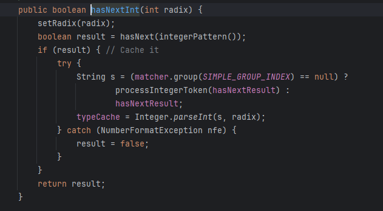

No todo es malo...
Como ya hemos comentado, el control que nosotros hemos hecho hasta ahora ha sido de formato de números enteros. Podríamos seguir implementando un try-catch cada vez que lo necesitemos, pero... hay una buena noticia.
Existe un método asociado a la clase Scanner llamado .hasNextInt(), el cual infiere el try-catch dentro de él y podemos usarlo en nuestros programas de la siguiente forma:
if (scanner.hasNextInt()) {
int numero = scanner.nextInt();
System.out.println("Número entero: " + numero);
} else {
System.out.println("No es un entero válido.");
}Este método verifica si la siguiente entrada que se va a leer es un entero (int). Además, la condición devuelve un booleano: si el valor introducido puede ser interpretado como un entero, devuelve true. Si no, devuelve false.
Si vamos a ver cómo está programado el método, podemos comprobar que se trata de un bloque try-catch como el que implementábamos nosotros:

(!) Siento decir, que si se trata de un valor erróneo y queremos seguir pidiendo el número, no tenemos más remedio que seguir utilizando el bucle while como hasta ahora.